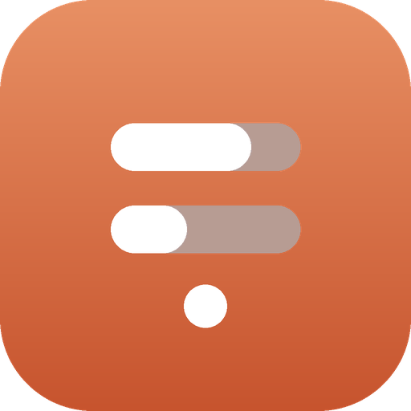

Everything ClaudeContextLimits does, and how to make it yours. It's a single menu-bar app — there's not much to learn, but here it all is.
ClaudeContextLimits ships as a regular .app. Move it to
/Applications and open it.
It's a small indie build, so the first launch goes through Gatekeeper. If macOS says it can't verify the developer, right-click the app → Open → Open, or allow it from System Settings → Privacy & Security.
Once open, four numbers appear in your menu bar — and that's it. There's no window and no Dock
icon; the app is a menu-bar agent (LSUIElement).
The readout is two lines:
63% 2h ← 5-hour window
41% 4d ← weekly windowEach line is percent used followed by time until that window resets. Claude Code limits you on two clocks at once — a rolling 5-hour budget and a weekly one — so the top line is the 5-hour window and the bottom line is the week.
| You see | Means |
|---|---|
63% | 63% of that window's budget is used up |
2h / 45m / 4d | time left until it resets (hours / minutes / days) |
— or blank | data not available yet (still loading, or no token in Server mode) |
Click the numbers to open the menu:
| Item | What it does |
|---|---|
| Refresh | Fetch the latest numbers right now |
| Data source | Switch between Server and Logs |
| View | Switch between Mono and Colour |
| Quit | Stop the app |
All choices are remembered between launches.
/usageServer mode reads the numbers straight from your account, the same way Claude Code does. It takes
your OAuth token from the Keychain entry Claude Code-credentials and calls
https://api.anthropic.com/api/oauth/usage. The result matches what
/usage shows inside Claude Code, to the digit.
Polled every 5 minutes by default — Anthropic rate-limits this endpoint, so calling it more often risks throttling.
Logs mode never touches the network. It reads your local session logs at
~/.claude/projects/**/*.jsonl, sums the token usage over the last 5 hours and
7 days, and compares it against your plan's ceiling. It's an estimate, not the
official figure, but it works with no token and fully offline.
Refreshed every 30 seconds by default.
| Server | Logs | |
|---|---|---|
| Accuracy | Exact (matches /usage) | Estimate |
| Network | One call to Anthropic's API | None — fully offline |
| Needs token | Yes (from Keychain) | No |
| Refresh | ~5 min | ~30 sec |
Mono renders the numbers as a normal template glyph — it follows your menu-bar appearance (dark/light) like any other system icon, and stays visually quiet.
Colour tints each line by how close you are to the cap, mirroring Claude's own warning steps:
| Used | Colour |
|---|---|
| < 50% | blue — plenty left |
| ≥ 50% | yellow — over halfway |
| ≥ 75% | orange — getting close |
| ≥ 90% | red — almost out |
Defaults are sensible, but the app keeps its settings in standard
UserDefaults under its bundle id com.kolocim.claudecontextlimits.
You can adjust them from Terminal, then relaunch the app:
# refresh intervals (seconds)
defaults write com.kolocim.claudecontextlimits serverInterval -int 300
defaults write com.kolocim.claudecontextlimits logsInterval -int 30
# starting data source / view
defaults write com.kolocim.claudecontextlimits source -string "server" # or "logs"
defaults write com.kolocim.claudecontextlimits view -string "mono" # or "color"serverInterval at 300 s or higher — Anthropic throttles the
usage endpoint, and polling it too often can get you temporarily blocked.For Logs mode, the plan ceiling it estimates against assumes a standard plan; if yours differs, the Logs percentage is a rough guide — Server mode is always exact.
To have ClaudeContextLimits start with your Mac: System Settings → General → Login Items → Open at Login → +, then pick ClaudeContextLimits. It'll quietly reappear in the menu bar after every reboot.
No account, no sign-up, no analytics, no telemetry. Nothing about your usage ever leaves your
Mac, with a single exception: in Server mode the app makes one request to
Anthropic's own API (api.anthropic.com) using your existing token — the exact same
call Claude Code itself makes. Logs mode makes no network requests at all.
—In Server mode: Claude Code isn't signed in on this Mac, so there's no token in the Keychain.
Sign in once and press Refresh. In Logs mode: there are no log files yet under
~/.claude/projects — run a Claude Code session first.
You may have been rate-limited for polling too often. Leave it a few minutes, and keep
serverInterval at 300 s or higher.
Gatekeeper. Right-click the app → Open → Open, or allow it in System Settings → Privacy & Security.